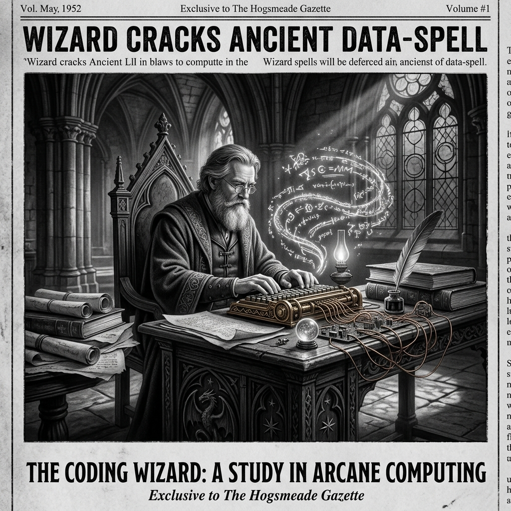

Morning Edition
6:00 AM CSTWorld & Geopolitics
Israel-Lebanon Ceasefire in Effect as Trump Says US "Very Close" to Iran Deal
A 10-day truce between Israel and Lebanon is now in effect, with Iran-backed Hezbollah voicing support. President Trump announced that Iran has agreed to turn over its enriched uranium, though Tehran has not yet commented on the claim. The ceasefire marks a significant de-escalation in a region that has been on edge for weeks.
— Source: BBC News, April 17, 2026Finance Ministers Raise Serious Concerns Over Mythos AI Model
Global finance ministers and top bankers have voiced alarm over Anthropic's private cybersecurity-focused AI model, Mythos, which is being used by Nvidia, Apple, and JPMorgan Chase to identify and exploit vulnerabilities. Experts say the model has an unprecedented ability to find security weaknesses—raising questions about who should wield that power.
— Source: BBC Business, The Verge, April 16-17, 2026Finance & Crypto
Bitcoin Stalls Below $76K as Sell Wall Caps Rally
Bitcoin is hovering near a key resistance level with $450 million in sell orders overhead. Liquidations are surging and derivatives data signal caution. However, Glassnode's RHODL ratio suggests the bottom may be in—market conditions resemble cycle corrections rather than late-stage tops, as long-term holders regain dominance.
— Source: CoinDesk, April 17, 2026Ethereum's Busiest Quarter Ever Caps Three-Year Comeback
Ethereum just posted its busiest quarter on record, with quarterly transactions hitting 200.4 million. The milestone marks a stunning three-year comeback for the network, driven by growing DeFi activity, L2 adoption, and institutional interest.
— Source: CoinDesk, April 17, 2026
The Friday Alchemist: Weaving Spells from Silicon and Starlight.
"Sagittarius, Friday arrives like a pull request you forgot you submitted—and it's been approved. The cosmos is merging your ambitions with your reality. For a Rat-born Archer, this is the day your side project gets noticed by the right person. The Wheel of Fortune is spinning in your favor. Don't overthink it—just ship."— Friday's Developer Chronicle
Sagittarius Horoscope
Happy Friday, Archer! The Wheel of Fortune is your card of the day—a shakeup is coming, but it's the good kind. Nothing is permanent, and that's your superpower today. Your natural adaptability as a Rat-born Sagittarius means you'll ride the wave while others scramble. Creative energy is peaking; if you've been sitting on an idea, today's the day to prototype it. Social connections light up this evening—a conversation could pivot your whole weekend. Lucky numbers: 7, 17, 26. Lucky color: Electric Indigo. ✨
— Source: Horoscope.com, April 17, 2026Tech & AI Highlights
-
Codex Can Now Use Your macOS Apps on Its Own
OpenAI's Codex agent has gained the ability to interact directly with macOS applications autonomously—a major leap for AI-assisted development workflows and a sign of things to come for desktop automation.
-
Bernie Sanders Rallies for AI Job Protections
Senator Sanders joined labor leaders across industries to push for job protections as AI evolves rapidly. He's called for a pause on data center construction and warned that within ten years, "the idea of a manufacturing job will no longer exist" if left unchecked.
-
Google in Talks to Let Pentagon Use Gemini in Classified Settings
Google is reportedly reversing course on its previous stance and is now in discussions to allow the Pentagon to use its Gemini AI model in classified environments—raising questions about the intersection of Big AI and national defense.
Markets Snapshot
- Bitcoin: ~$76,000 (stalled at resistance)
- Ethereum: Record quarterly transactions (200.4M)
- RHODL Ratio: Signals BTC bottom may be in
- Gold: Elevated on geopolitical hedging
- Mythos AI: Raising alarms in finance sector
Active Reminders
- Build Oomi iOS and Android app
- Plaid Integration Research
- Connect Nemu to Notion
- Research VPN/proxy services
- Create security OpenClaw bot